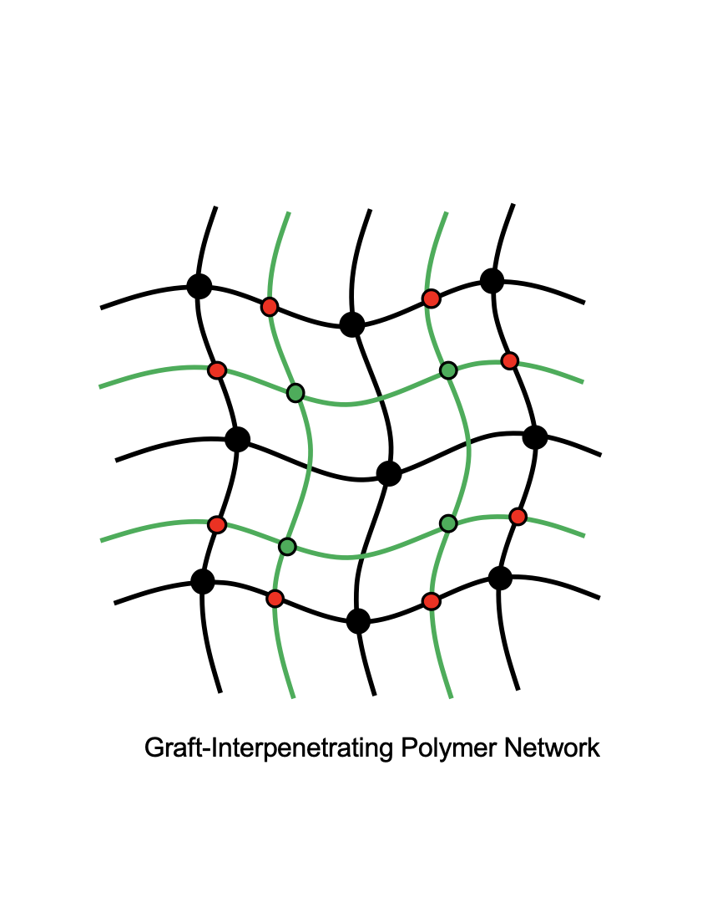
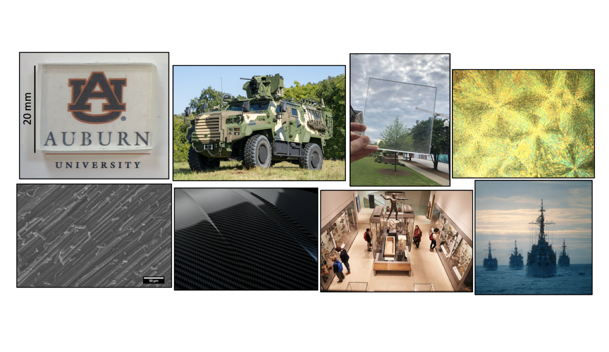
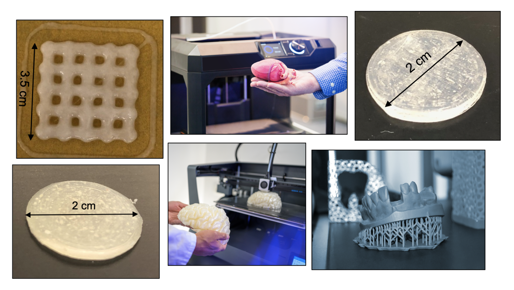
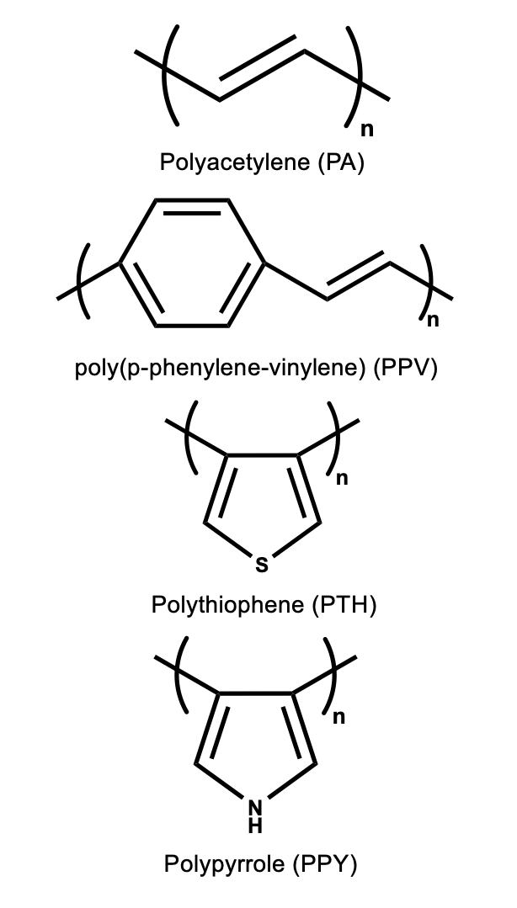
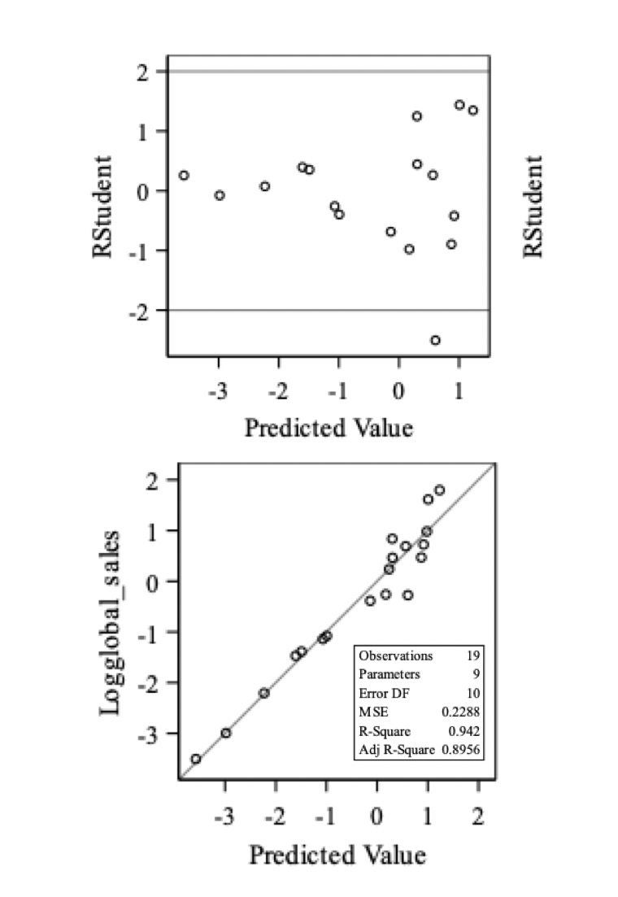

Materials Scientist & Polymer Engineer
Ph.D. Auburn UCSB Postdoc Saint-Gobain 12+ Publications
Developing next-generation polymer materials for aerospace, biomedical, and semiconductor applications — from interpenetrating networks to 3D-printed functional systems.

Graft-IPN — core research focus
I am a materials scientist with a strong background in polymer engineering, materials development, and advanced manufacturing.
Most recently, I worked as a Senior Research Engineer at Saint-Gobain ENC, developing sustainable high-temperature materials for aviation, aerospace, and automotive industries. Previously, as a postdoctoral scholar at UC Santa Barbara, I developed DLP 3D printing resins and designed block copolymer materials for semiconductor thin-film patterning with Tokyo Electron (TEL).
My Ph.D. and M.S. at Auburn University focused on interpenetrating polymer networks (IPNs) — a special polymer blend achieving 150% improvement in fracture toughness for transparent, high-impact structural materials, composites, and thermal energy storage.
IPN synthesis, block copolymers, photocurable resins
DLP, SLA, FDM, and DIW 3D printing
Aerospace, automotive, and biomedical applications


Ph.D., Polymer and Fiber Engineering
GPA: 3.93 / 4.0
Thesis: Acrylic-polyurethane based graft-interpenetrating polymer networks for high-performance applications.
Acrylic-polyurethane based graft-IPNs were synthesized with excellent transparency and 120% improvement in fracture toughness compared to traditional transparent materials such as PMMA and Polystyrene. IPNs were also utilized as a matrix in carbon fiber-reinforced composites, demonstrating promising results for demanding materials applications.
The stress relaxation behavior of IPNs was modeled using the Prony series and a Generalized Maxwell model using MATLAB and FEniCS. In the final chapter, graft semi-IPNs with excellent thermal properties and shape stability were synthesized for thermal energy storage (TES) applications.
M.S., Polymer and Fiber Engineering
GPA: 3.92 / 4.0
Thesis: Crosslinkable 3D printing inks for biomedical applications.
3D bioprinting could be used in various medical applications such as tissue engineering, organ printing, cell-based sensors, and surgical aids. Hydrogels with alginate and cellulose are good candidates for 3D bioprinting due to high biocompatibility, low toxicity, and suitable mechanical properties. Direct ink writing (DIW) technology was used, showing good structural fidelity.
For orthodontic applications and organ model printing, photocurable polymers were synthesized and printed using UV-assisted DIW. All polymeric systems show proper viscosity and shear-thinning behavior, with high structural fidelity and good thermal properties confirmed by DSC.
B.Sc., Polymer Engineering
Thesis: Nano-biocomposites: properties, manufacturing processes, and applications in eco-friendly products for packaging and agriculture.
Materials Scientist — AI-Driven Solutions & Technical Consulting
Senior Research Engineer I
Postdoctoral Scholar — Materials Department
Graduate Research Assistant (Ph.D.)
Graduate Research Assistant (M.S.)
Undergraduate Research Assistant
Studied properties, manufacturing processes, and applications of nano-biocomposites for eco-friendly packaging and agriculture products.
Summer Intern
Studied and reviewed the manufacturing process, modification, and behavior of polyvinyl chloride (PVC).
Coursera – Arizona State University (Dhruv Bhate), Aug. 2025
Coursera – Arizona State University (Arunachala Nadar Mada Kannan), Jul. 2025
N. Alizadeh, E. Broughton, M. Auad, "Graft semi-interpenetrating polymer network phase change materials for thermal energy storage," ACS Applied Polymer Materials 2021, 3 (4), 1785–1794.
N. Alizadeh, E. Triggs, R. Farag, M. Auad, "Flexible acrylic-polyurethane based graft-interpenetrating polymer networks for high impact structural applications," European Polymer Journal 2021, 148, 110338.
N. Alizadeh, A. Celestine, M. Auad, V. Agrawal, "Mechanical characterization and modeling stress relaxation behavior of acrylic–polyurethane-based graft-interpenetrating polymer networks," Polymer Engineering & Science 2021, 61 (5), 1299–1309.
N. Alizadeh, D. Thorne, M. Auad, A. Celestine, "Mechanical performance of vinyl ester-polyurethane interpenetrating polymer network composites," Journal of Applied Polymer Science 2021, 138 (19), 50411.
N. Alizadeh, M. Barde, M. Minkler, A. Celestine, V. Agrawal, B. Beckingham, M. Auad, "High-fracture-toughness acrylic-polyurethane-based graft-interpenetrating polymer networks for transparent applications," Polymer International 2020, 70 (5), 636–647.
N. Alizadeh, S. Bird, R. Mendez, K. Jajam, A. Alexander, H. Tippur, M. Auad, "Chapter 11 — Synthesis and characterization of high performance interpenetrating polymer networks with polyurethane and poly(methyl methacrylate)," in Unsaturated Polyester Resins, Elsevier: 2019, pp. 243–255.
Y. Wang, N. Alizadeh, M. Barde, M. Auad, B. Beckingham, "Poly(acrylic acid)-based hydrogel actuators fabricated via digital light projection additive manufacturing," ACS Applied Polymer Materials 2022, 4 (2), 971–979.
Y. Choi, S. Warnock, N. Alizadeh, P. Nguyen, D. Kottage, O. Phillips, Z. Chen, M. Chabinyc, C. Bates, "Acid-sensitive molecular glasses as removable thin-film protective layers," Chemistry of Materials 2023, 35 (23), 10078–10085.
J. Hinkle, A. Bansode, N. Alizadeh, A. Poudyal, J. Thornhill, A. Bass, X. Zhang, A. Adamczyk, T. Elder, M. Auad, "Nickel hydroxide growth on renewable activated carbon microfibers for the development of supercapacitors," Journal of Applied Polymer Science 2023, 140 (28), e54052.
M. Minkler, X. Hou, N. Alizadeh, M. Auad, A. Schindler, L. Beckingham, B. Beckingham, "Curing kinetics of tetrathiol-crosslinked diglycidyl ether of bisphenol A and poly(ethylene oxide)diglycidylether," Materials Letters 2022, 310, 131491.
P. Nguyen, D. Callan, E. Plunkett, M. Gruschka, N. Alizadeh, M. Landsman, G. Su, E. Gann, C. Bates, D. DeLongchamp, M. Chabinyc, "Resonant soft X-ray scattering reveals the distribution of dopants in semicrystalline conjugated polymers," The Journal of Physical Chemistry B 2024, 128 (50), 12597–12611.
J. Blankenship, A. Levi, D. Goldfeld, J. Self, N. Alizadeh, D. Chen, G. Fredrickson, C. Bates, "Asymmetric miktoarm star polymers as polyester thermoplastic elastomers," Macromolecules 2022, 55 (12), 4929–4936.
Studied the effect of fiber orientation and fiber length on the mechanical properties of carbon fiber reinforced composites with applications in military, aerospace, and automotive industries.

Reviewed electromagnetic shielding applications using conducting polymers (PANI, PPY, PEDOT) and corrosion protection properties. Studied tunable properties such as hydrophilicity and conductivity for anti-corrosion coatings.
Synthesized high-performance acrylic-polyurethane based graft-interpenetrating polymer networks with no phase separation. Applications range from military and aerospace to commercial uses such as windshields.
Reviewed properties and applications of polymer nano-composites based on layered silicates (PLS nanocomposites), exhibiting higher interfacial interaction compared to conventional composites.
Reviewed properties and applications of different additive manufacturing technologies with wide-ranging applications in biomedical, aerospace, and military industries.

Studied the effect of critic score and user score considering their interaction with different platforms, genres, and publishers on global videogame sales, showing strong linear correlation.
Auburn University | May 2019 – May 2020
Served as graduate student representative on the Graduate Council and Faculty Senate for 4,000+ students. Presided over Executive Board meetings; approved all official GSC communications and financial forms.
Auburn University | Aug. 2018 – May 2019
Represented the chemical engineering department, operated as the collective voice for graduate students in university affairs and the Student Government Association (SGA).
Ongoing
Serving as a peer reviewer for high-impact scientific journals including Journal of Applied Polymer Science and Polymer International.
Auburn University | Aug. 2018 – May 2019
Coordinated networking and social events, the Outstanding Graduate Mentor program, and the "This is Research: Student Symposium."
National Organization for Development of Exceptional Talents | Mar. 2010
Collaborated in organizing the Hoger Scientific Conference organized by the National Organization for Development of Exceptional Talents (NODET).
Auburn University
CEGS 5-minute presentation competition, Auburn University
Selected for ACS Spring 2020 National Meeting
Auburn University
CEGS 5-minute presentation competition, Auburn University
Recognition of dedicated service to Auburn University GSC
"Believe you can and you're halfway there."
— Theodore Roosevelt
I'm open to research collaborations, consulting engagements, and exciting opportunities in materials science and polymer engineering.